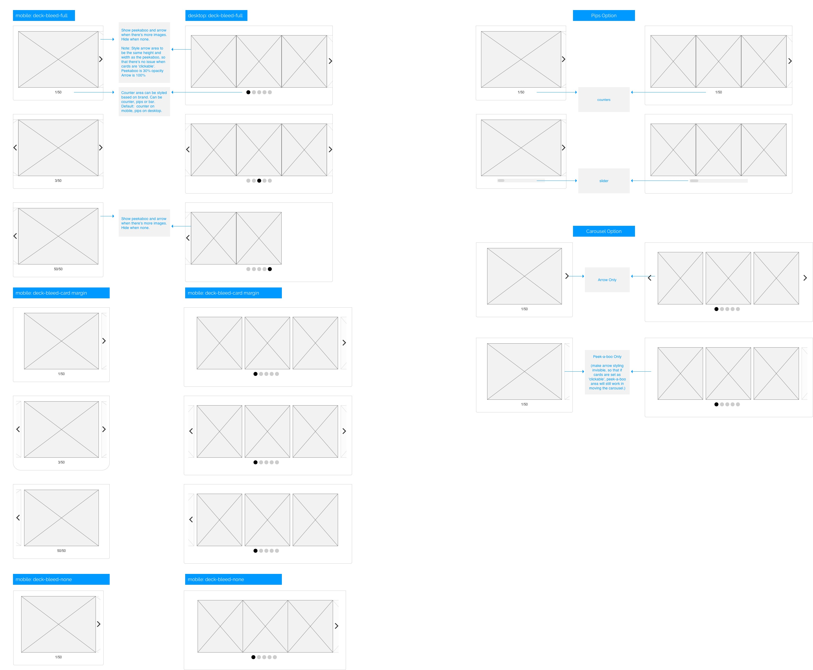
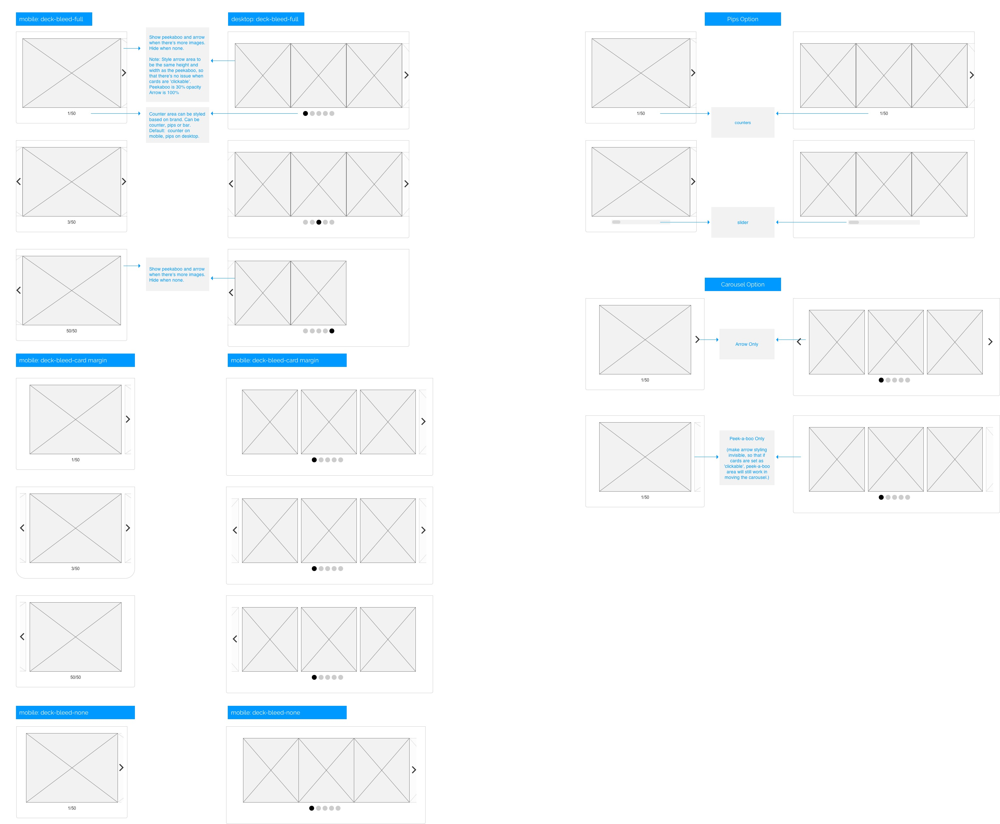
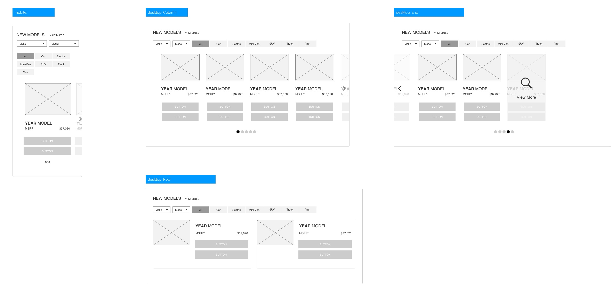
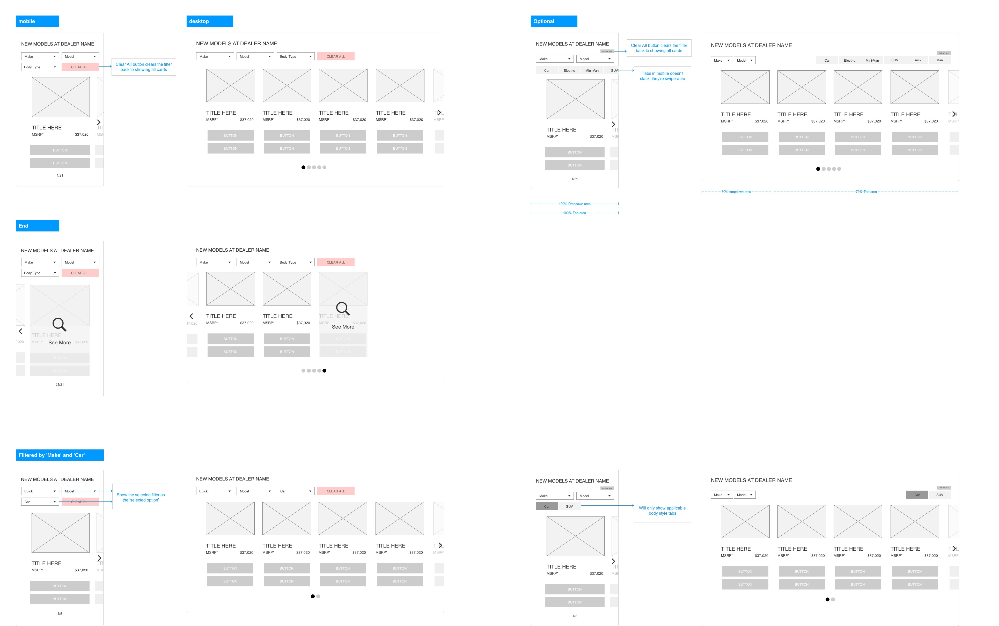
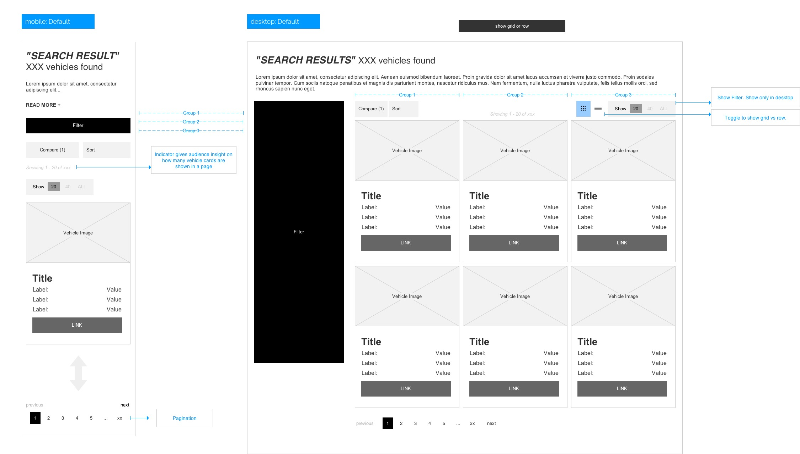
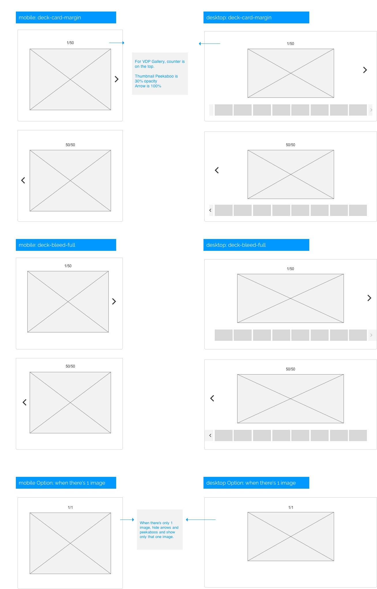
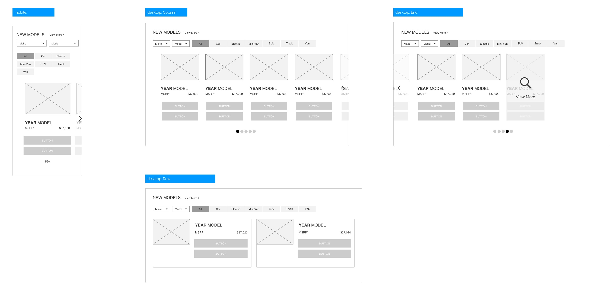
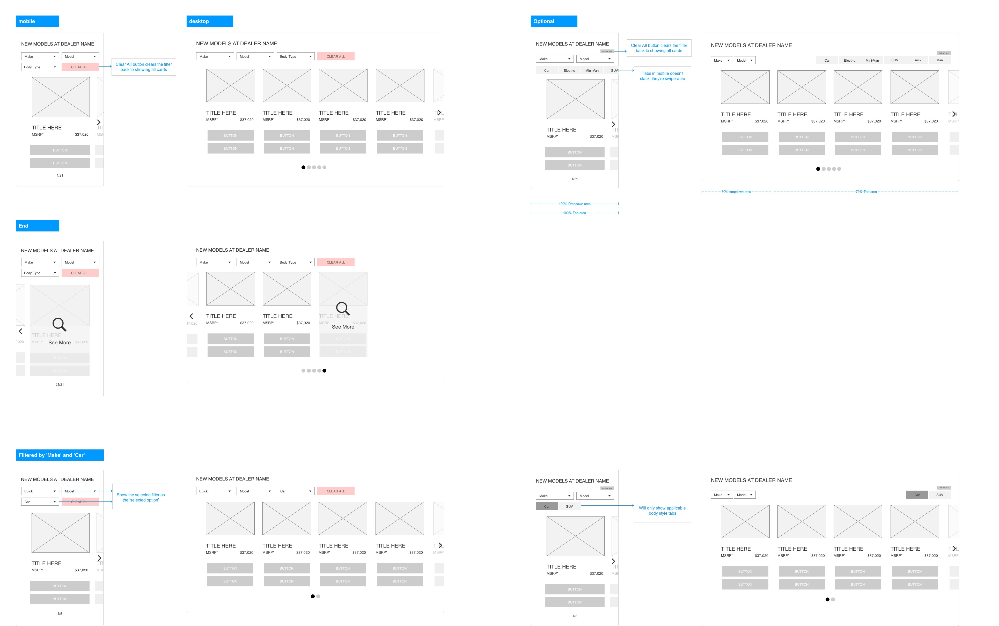
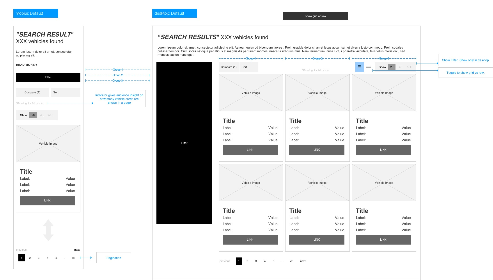
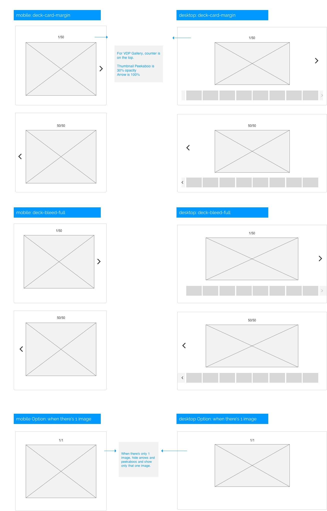

CDK Global
UI/UX Designer
Note
As a UI/UX designer at CDK Global, I spent most of my time here create wireframes, mocks and design specs for their NextGen platform.
- Goal: Launch New layout/framework called 'NextGen'.
- Role: UI/VX Designer
- Problem: New concept, new framework and dynamic content. You can look at one of their old tetra site HERE
- Solution: Besides the hi-fidelity mocks of what the site should look, create wireframes for good and worst case scenarios based on dynamic content. Research tetra site for existing content. And make sure to collaborate with other department.
- Outcome: We were able to launch Lexus dealership successfully. We currently know have 3000+ LIVE sites using NextGen layout. Since NextGen have launch, there has been many iterations, new designs, new features, new content and new dealership using it. NextGen is still being refined and we are learning what worked and what didn't. You can look at the live site for Lexus HERE
Tool
Adobe Photoshop, Axure, Illustrator
 

 






